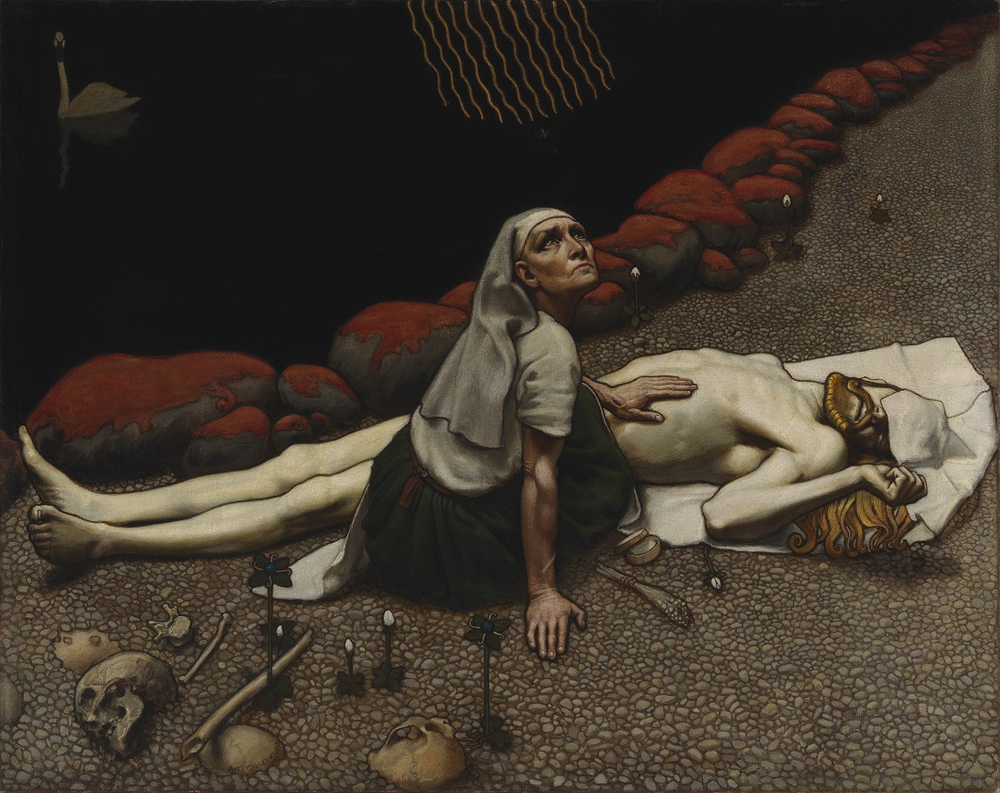

Tervetuloa Kinoon! Olemme viihtyisä ja moderni elokuvateatteri, joka tarjoaa ensiluokkaisia elokuvaelämyksiä kaiken ikäisille. Meidän missionamme on tuoda uusimmat elokuvat ja klassikot suurelle valkokankaalle rentouttavassa ympäristössä.
Sijaitsemme keskeisellä paikalla, ja meillä on helppo saapua niin julkisilla kuin omalla autolla.
osoite: Valimotie 2
gsm: 040 xxx xxxx
Tämä elokuva kertoo Sammon ryöstöstä. Pohjolaan saavuttuaan Väinämöinen vaatii Louhelta Sammon jakoa. Louhi ei tähän suostu. Väinämöinen soittaa kanteleellaan Pohjolan väen uneen. Pohjolan uinuessa Ilmarinen voitelee yhdeksän lukkoa, joiden takana Sampo on. Tämän jälkeen Lemminkäinen kyntää Sammon juuret Pohjolan härällä ja vie sen veneeseen. Kolmen päivän kuluttua Lemminkäinen pyytää Väinämöistä laulamaan, mutta Väinämöinen ei tähän suostu, koska koti ei vielä näy. Lemminkäinen ryhtyy itse laulamaan "äreällä äänellänsä, / käheällä kulkullansa". Ääni kaikuu yli vesien ja säikäyttää kurjen, jonka huuto vuorostaan herättää Pohjolan väen.
Katso lisää